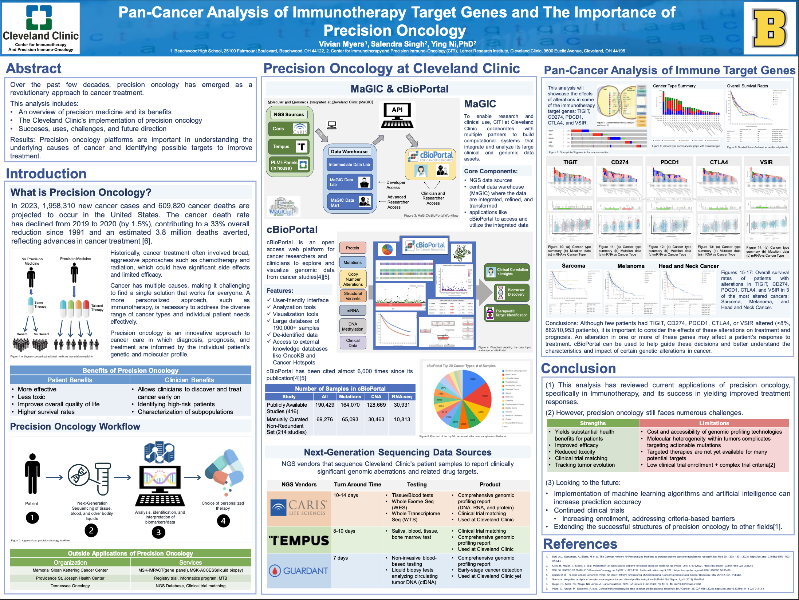
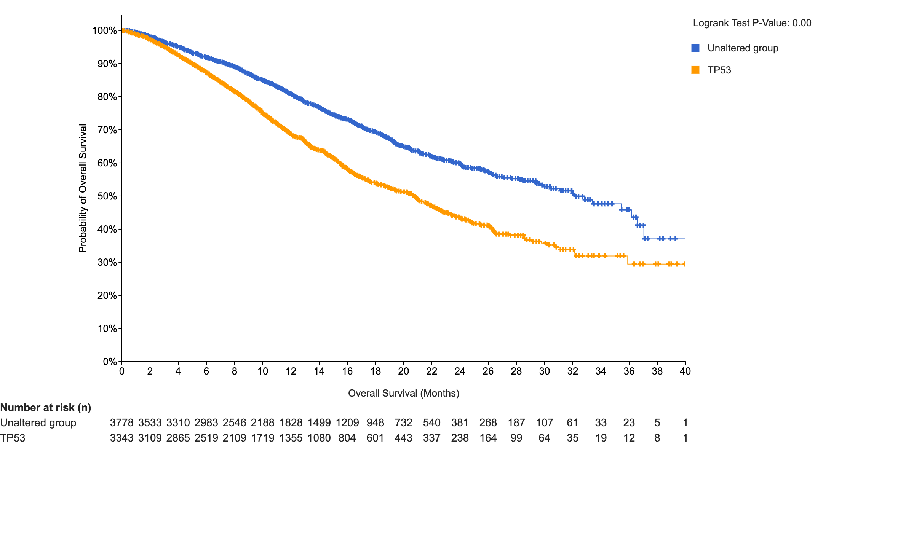

PanCancer Analysis of Tumor Suppressors
Using cBioPortal
Introduction
The purpose of this project is to use cBioPortal to perform a Pan-Cancer analysis of tumor suppressor genes(TSG). This project builds on work done at the Immunology and Precision Oncology Lab at the Cleveland Clinic’s Lerner Research Institute.

Motivation
Precision oncology seeks to tailor cancer treatment based on each tumor’s genetic makeup. This project focuses on understanding how tumor suppressor genes (key regulators of cell growth and DNA repair) are altered across cancer types.
Overview
We will query the 2017 MSK-IMPACT Clinical Sequencing Cohort PanCancer dataset for the following genes:
- TP53: A key tumor suppressor gene that controls cell cycle arrest, apoptosis, and DNA repair
- APC: Controls cell growth and adhesion, preventing colon cancer.
- RB1: Regulates cell cycle progression and prevents uncontrolled cell division.
Analysis
Cancer Types Summary
TP53
TP53 is a well-known and critical TSG which controls cell cycle arrest, apoptisis, and DNA repair.
Figure 1 is a summary of Alteration Freq. vs Cancer Types. TP53 was altered in over 80% of patients with Small Cell Lung Cancer, and ~70% of patients with Colerectal, Ovarian, and Esophagogastric cancers. Across each remaining type, TP53 is frequently altered for almost every cancer type.
APC
APC is another key TSG which regulates cell growth and adhesion.
Again, Figure 2 is a summary of Gene Alteration Freq. vs Cancer Type. APC is altered in almost 80% of patients with Colorectal Cancer. The mutation rate for other cancer types drops sharply, with Small Bowel Cancer following at ~40% alteration freq. This visualization indicates that APC is correlated with Colorectal cancer.
RB1
RB1, another cell cycle regulator, helps control progression and prevents uncontrolled cell division.
Figure 3 summarizes Gene Alteration Frequency and Cancer Type. We see an almost 80% alteration frequency for RB1 in Small Cell Lung Cancer, suggesting some sort of correlation. Alteration frequency decreases sharply, with Uterine Sarcoma following SCLC at 40% frequency. RB1 mutations are prevalent in Small Cell Lung Cancer.
Survival Rate
TP53
Suivival rate is strongly correlated with alterations in TP53.
 ?@fig-tp53-survival shows that patients with altered TP53 genes have a significantly lower survival rate than patients with an unaltered gene. This indicates that cancer patients, on average, have a lower chance of survival with a mutated TP53 TSG.
APC
Figure 4 shows no statistically significant relationship between alterations in APC and survival rate. On average, unaltered patients and altered patients had similar survival rates. This indicates that APC, while till being a TSG, may not affect survival rate.
RB1
Figure 5 shows a strong correlation between RB1 mutations and survival rate. RB1 mutations may often to a decreased survival rate in cancer patients.
Conclusion
This Pan-Cancer analysis allowed us to visualize and understand how tumor suppressor genes affect patients. While there are many different factors to consider, genetics proves its importance in oncology and cancer treatment.
There may be biases reflected in the data that we did not consider (such as race, background, socioeconomic status, etc).
Overall, these findings reinforce the central role of TSGs in cancer progression and underscore the value of integrative genomic analysis in precision oncology. Future work can expand on these results by linking tumor suppressor alterations to drug response, immune activity, and clinical outcomes, helping guide more effective, personalized cancer therapies.